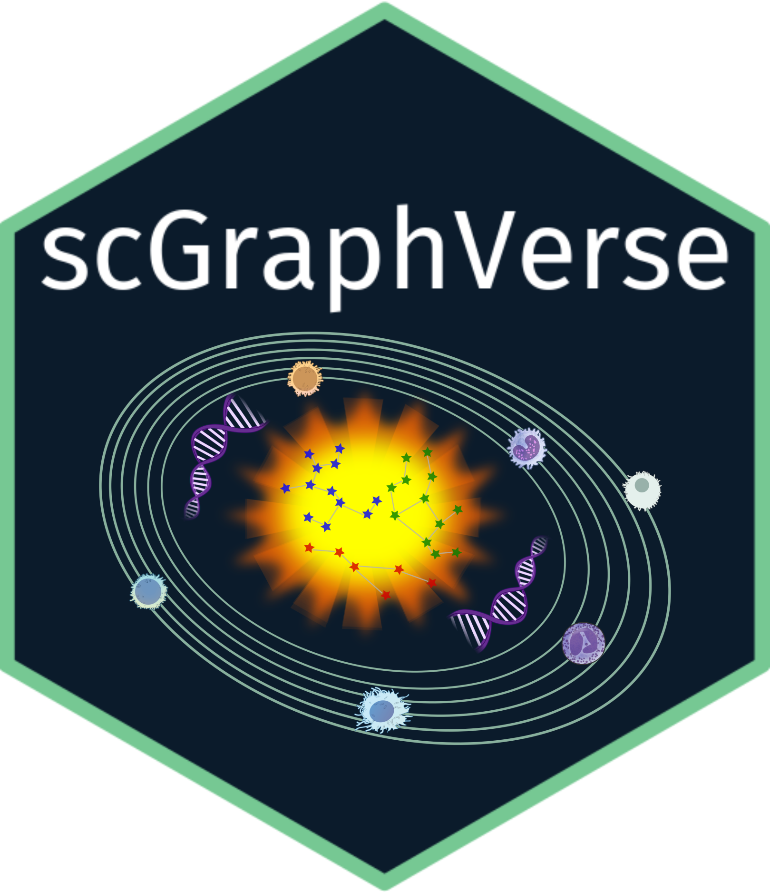
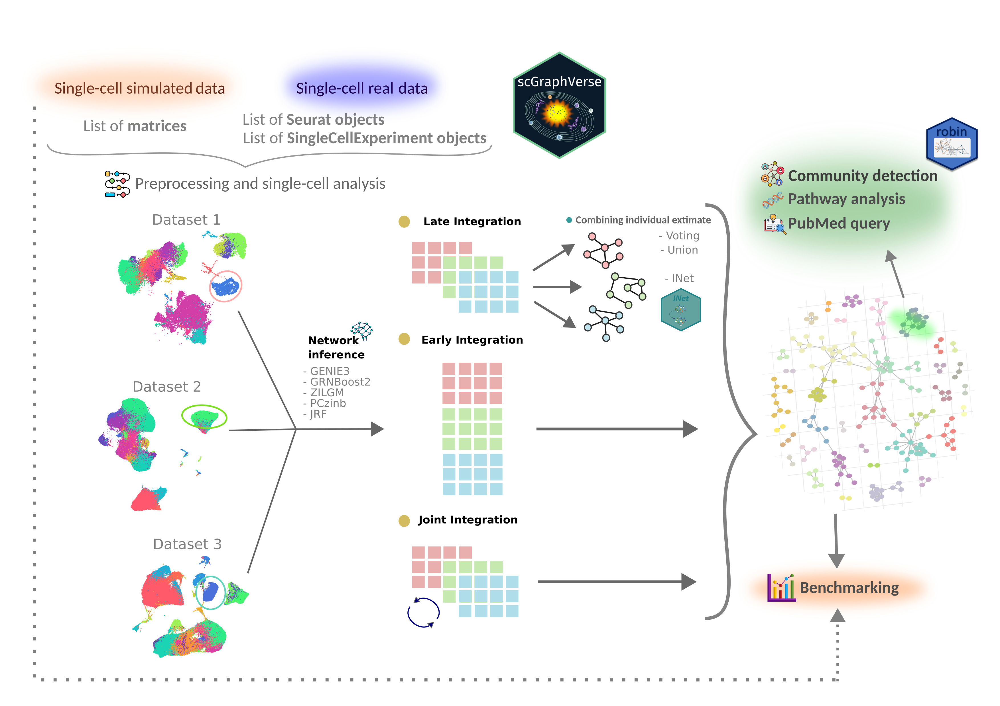

scGraphVerse is an R package for inferring, evaluating, and visualizing gene regulatory networks (GRNs) from single-cell RNA sequencing data. It supports multiple GRN inference algorithms, consensus construction across methods or datasets, performance evaluation, and rich visualizations — all optimized for single-cell expression analysis.
✨ Features
- 🔍 Inference of GRNs using:
- GENIE3 (tree-based ensemble)
- GRNBoost2 (Python-based gradient boosting)
- ZILGM (zero-inflated Gaussian graphical model)
- PCzinb (partial correlation with zero-inflated NB model)
- JRF (joint random forests for multi-sample networks)
- 🎯 Network thresholding using shuffled matrix null models (
cutoff_adjacency) - 🧠 Consensus construction across methods using voting, union, or INet
- 📊 Performance metrics: ROC, AUC, classification metrics, and network topology
- 🧩 Network visualization using
ggraphandigraph

🧪 Installation
Development version (GitHub)
For now, install the development version directly from GitHub:
install.packages("devtools")
devtools::install_github("ngsFC/scGraphVerse")📦 External Dependencies
Some inference methods used by scGraphVerse require external packages that are not available on CRAN or Bioconductor. You must install these manually:
# GRNBoost2 (Python - arboreto)
# Install using pip (run in your terminal, not R):
pip install arboreto
# ZILGM (GitHub)
remotes::install_github("bbeomjin/ZILGM")
# PCzinb (GitHub)
BiocManager::install("drisso/learn2count")
# JRF (GitHub or archived CRAN)
install.packages(
"https://cran.r-project.org/src/contrib/Archive/JRF/JRF_0.1-4.tar.gz",
repos = NULL,
type = "source"
)
#INeet-Tool (GitHub)
remotes::install_github("ValeriaPolicastro/INet-Tool")📚 Citation
If you use scGraphVerse, please cite the original GRN inference methods it implements:
- Huynh-Thu VA, Irrthum A, Wehenkel L, Geurts P. Inferring Regulatory Networks from Expression Data Using Tree-Based Methods. PLOS ONE. 2010 Sep 28;5(9):e12776.
- Moerman T, Aibar Santos S, Bravo González-Blas C, Simm J, Moreau Y, Aerts J, et al. GRNBoost2 and Arboreto: efficient and scalable inference of gene regulatory networks. Bioinformatics. 2019 Jun 15;35(12):2159–61.
- Park B, Choi H, Park C. Negative binomial graphical model with excess zeros. Stat Anal Data Min ASA Data Sci J. 2021;14(5):449–65.
- Nguyen TKH, Berge K van den, Chiogna M, Risso D. Structure learning for zero-inflated counts with an application to single-cell RNA sequencing data. Ann Appl Stat. 2023 Sep;17(3):2555–73.
- Petralia F, Song WM, Tu Z, Wang P. New Method for Joint Network Analysis Reveals Common and Different Coexpression Patterns among Genes and Proteins in Breast Cancer. J Proteome Res. 2016 Mar 4;15(3):743–54.